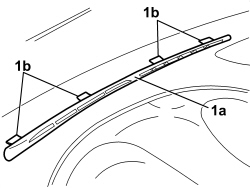

5010C12 WINDSCREEN DEMISTER DIFFUSER - R+R
- Path
- Procedures > 50 AUXILIARY UNITS > 5010 CLIMATE CONTROL - MISCELLANEOUS > 5010C AIR VENTS > 5010C12 WINDSCREEN DEMISTER DIFFUSER - R+R
- Kind
- repair procedure (removal / refitting; the operation number is the code)
- Applies to
- all engines; all production periods
- Interactive page
- https://sloeber94.github.io/elrnDB-aBrrSpdr/en/#/946002248
Applies to: all engines; all production periods
 Removing
Removing
 Refitting
Refitting1. Remove the vent (1a) releasing the flexible retainers (1b).

Applies to: all engines; all production periods
Refitting
Removing- Check that the vent is not damaged.
- Position the vent and attach the flexible retainers.
Topics that link to this page (7)
- 1820B21 MASTER CYLINDER (PUMP) - R R FOR RIGHT HAND DRIVE VERSIONS
- 3330B02 PEDAL ASSEMBLY - R.R
- 3330B23 BRAKE PEDAL - R.R. FOR RIGHT HAND DRIVE VERSIONS
- 3330B27 CLUTCH PEDAL - R.R. FOR RIGHT HAND DRIVE VERSIONS
- 3330B42 PEDAL UNIT SUPPORT - R.R. FOR RIGHT HAND DRIVE VERSIONS
- 3330D18 BRAKE SERVO R R FOR RIGHT HAND DRRIVE VERSIONS
- 7040A27 DASHBOARD TRIM - STRIPPING FOLLOWING REPLACEMENT